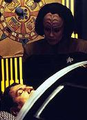
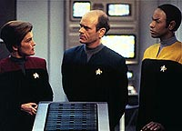
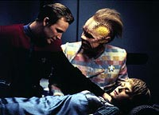
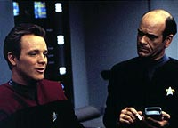
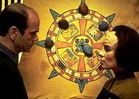

|
MANCHETE
DO EPISÓDIO
Episódio
que fala de paranóia marca
ponto mais baixo da primeira temporada
Episódio
anterior | Próximo
episódio
Sinopse:
Data Estelar: 48734.2.
 Um
ataque a uma nave auxiliar pilotada por Chakotay e Tuvok deixa ambos
feridos e o comandante com aparente morte cerebral. O Doutor explica
que algo drenou toda a energia bio-neural do cérebro do
primeiro-oficial. O prognóstico parece terrível, mas Torres coloca
uma roda medicinal nativa americana perto da cama de Chakotay, na
esperança de que isso ajude o seu amigo a encontrar o caminho para
a cura dos ferimentos.
Depois que Tuvok se recupera, revela
que eles foram atacados por uma nave não-identificada que emergiu
de uma nebulosa de matéria escura. Janeway ordena que a Voyager
retorne àquelas coordenadas para investigar o ocorrido, mas antes
que consiga chegar ao local, a nave muda de curso. O computador
navegacional implica que foi Paris quem alterou a rota, mas ele
nega. Pouco tempo depois, Torres inicia a desativação do núcleo
do reator de dobra, mas, assim como Paris, ela não se lembra de ter
instigado tal ação. Quando o Doutor os examina, descobre que
um estranho padrão de ondas cerebrais foi sobreposto neles durante
os incidentes - o que sugere que uma entidade alienígena
momentaneamente tomou o controle de suas mentes. Como precaução,
Janeway transfere os códigos de comando da nave para uma fonte
não-orgânica: o Doutor.
 Quando
Kes diz a Janeway que vem sentindo uma presença alienígena a bordo, Tuvok
sugere que seja feito um elo mental com a Ocampa para ajudá-la a
concentrar suas habilidades telepáticas. Porém, pouco tempo
depois, os dois são encontrados inconscientes, resultado de uma
descarga energética semelhante àquela que atingiu a nave auxiliar,
segundo Tuvok. Mais tarde, alguém desativa o programa do Doutor.
Sem ele em cena, os códigos de comando voltam para a capitã, que
decide dividi-los com Tuvok. A força desconhecida tenta se apossar
de Janeway, mas a tripulação a incapacita. A entidade então salta
para Kim, depois para o tenente Durst e, quanto toma Tuvok, ele
dispara contra todos na Ponte.
Uma série de pistas implicam que
Tuvok está mentindo para seus colegas. Eles descobrem que não
havia uma nave na nebulosa e parece que os ferimentos de Kes são
resultado de um aperto muscular Vulcano. Sob as suspeitas, Tuvok
toma o controle da Voyager e traça um curso para dentro da nebulosa,
onde diz que vivem os Komar. Mas antes que consiga colocar a nave
dentro da anomalia, algo faz com que Torres ejete o núcleo do
reator de dobra. Assim, tudo indica que Tuvok tem estado sob o
controle dos Komar e que Chakotay vem saltando de tripulante em
tripulante para impedir que a nave entre naquela região.
 Por
fim, a tripulação consegue dominar o Vulcano e a entidade deixa a
Voyager para se reunir com os outros de seu tipo na nebulosa. Os
oficiais têm que sair da área, mas não conseguem navegar pelo
fenômeno espacial. Na Enfermaria, Neelix re-combina as pedras na
roda medicinal de Chakotay. Janeway então percebe que se trata de
uma mensagem de seu primeiro-oficial indicando o curso a seguir, e a
nave deixa a nebulosa bem a tempo. Mais tarde, o Doutor consegue
reintegrar a energia neural deslocada de Chakotay em seu corpo e o
ressuscita.
Comentários:
"Cathexis" representa o ponto mais baixo
da temporada. Com um enredo desinteressante e pouco consistente, o
episódio pode ser sintetizado em uma palavra: esquecível.

O intuito original foi criar um clima de suspense e terror quando
uma entidade alienígena toma conta das mentes e dos corpos de
tripulantes da nave. A partir daí, uma situação paranóica começa
a tomar forma, já que ninguém pode garantir que seu colega não
esteja tomado pela criatura em um dado momento.
A verdade é que esse ângulo poderia ter sido explorado para trazer
à tona algo sobre os personagens, ou como eles lidariam com essa
paranóia gerada em torno da presença alienígena. Infelizmente, os
roteiristas não conseguiram trazer isso.
Muito pelo contrário, os personagens não parecem mais que um bando
de tripulantes, em vez de serem pessoas específicas, com características
específicas.

Para fechar com chave de ouro, Chakotay na forma de alma penada
fazendo as vezes de anjo da guarda da Voyager. A premissa já
apareceu antes em Jornada, quando Spock tornou-se invisível (na
verdade, muito rápido) e efetuou reparos na Enterprise (no episódio
"Wink of an Eye"), mas até na Série Clássica
a situação foi mais verossímil.
Para resumir, o episódio simplesmente não convence. Falta propósito,
enredo e interação entre os personagens. Isso só para não
mencionar o senso do ridículo. Mais uma das "bolas fora"
creditada a Brannon Braga e Joe Menosky.
Citações:
Doutor - "Just because a
man changes his drink order dosen't mean he's possessed by an alien."
("Só porque um homem pede uma bebida diferente não quer dizer
que esteja possuído por um alienígena.")
Trivia:
 "Eu tive um trabalhão com esse script", diz Brannon
Braga, que escreveu o roteiro juntamente com Joe Menosky.
"Michael Piller procurou fazer uma história sobre paranóia, o
que na hora pareceu bem interessante. Porém, vimos como é difícil
fazer um show sobre paranóia tendo uma nave da Federação como cenário.
Lá as pessoas não agem dessa maneira. É uma história complexa,
como geralmente as minha são", conclui Braga.
"Eu tive um trabalhão com esse script", diz Brannon
Braga, que escreveu o roteiro juntamente com Joe Menosky.
"Michael Piller procurou fazer uma história sobre paranóia, o
que na hora pareceu bem interessante. Porém, vimos como é difícil
fazer um show sobre paranóia tendo uma nave da Federação como cenário.
Lá as pessoas não agem dessa maneira. É uma história complexa,
como geralmente as minha são", conclui Braga.
Ficha
técnica:
História de Brannon Braga &
Joe Menosky
Roteiro de Brannon Braga
Dirigido por Kim Friedman
Exibido em 01/05/1995
Produção: 013
Elenco:
Kate Mulgrew como
Kathryn Janeway
Robert Beltran como Chakotay
Roxann Biggs-Dawson como B'Elanna Torres
Robert Duncan McNeill como Tom Paris
Jennifer Lien como Kes
Ethan Phillips como Neelix
Robert Picardo como Doutor
Tim Russ como Tuvok
Garrett Wang como Harry Kim
Elenco convidado:
Brian Markinson como Durst
Michael Cumpsty como Lorde Burleigh
Carolyn Seymour como sra. Templeton
Episódio
anterior | Próximo
episódio
|